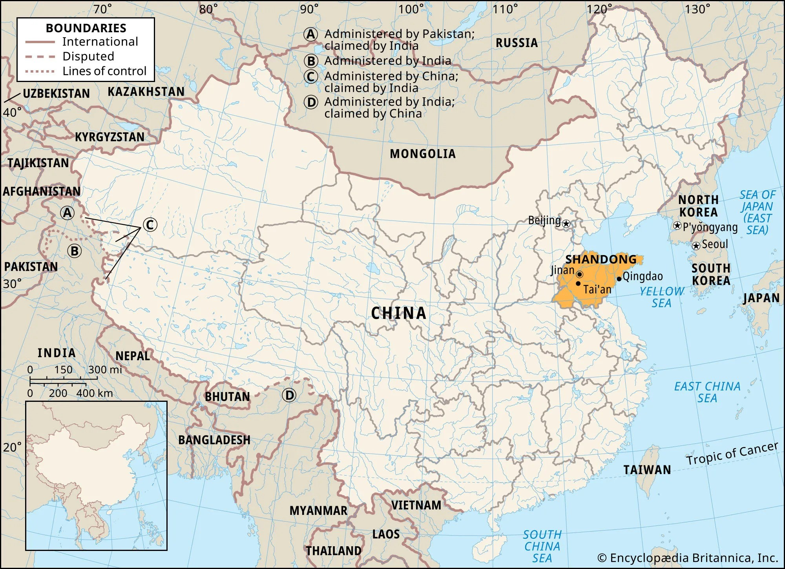
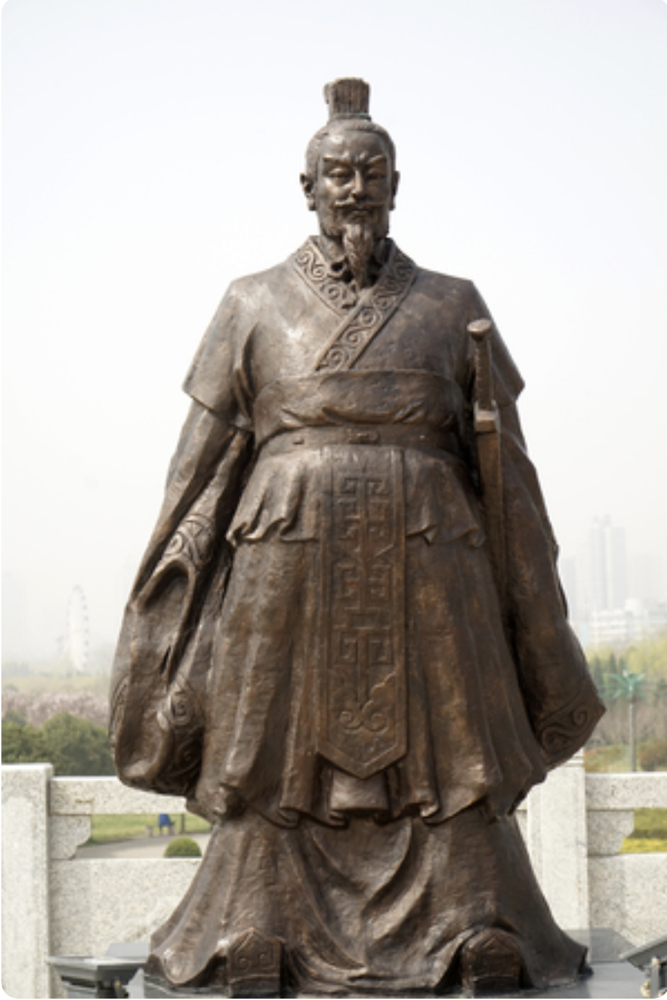

English 103 Slides
Table of Contents
Introduction
This document collects the slide content presented in your English 103 course for your review. Note that this is the exact same content included on slides, without any additional explanatory material. Slide content is not a substitute for attending class and likely will not make sense without that classroom context. I will update this same file as the semester progresses (please remind me if I've forgotten) so make sure to check back often if you find it helpful as a supplemental document.
Last updated September 14, 2026.
Week 1 / Thursday

Figure 1: A diagram of the rhetorical situation.
Week 2 / Tuesday
Ancient Greek Rhetoric
- The Classical Era of Athens: 508 BC – 322 BC
- Socrates: ca. 470 BC – 399 BC
- Plato: ca. 428 BC – 348 BC
- Aristotle: 384 BC – 322 BC
Plato, Socrates, and Aristotle

Figure 2: Socrates, Plato, and Aristotle are (arguably) the three most important theorists of rhetoric in the Western tradition.
Why Ancient Greece Matters
- Democracy
- Philosophy
- Rhetoric
Ancient Greek Rhetoric: Context
- The Trivium
- Grammar
- Logic
- Rhetoric
- The Sophists: First teachers of rhetoric
Critiques of Rhetoric
- Is it moral?
- What are the potential negative effects?
Rhetoric and Manipulation

Figure 3: Rhetoric, like the Force, can be used for good and for evil.
Aristotle
- Rhetoric is a tool to arrive at truth and goodness
- The purpose of rhetoric is to identify the possibilities for persuasion within a given situation.
Rhetoric's Three Domains
- Deliberative: What should we do? (Political)
- Forensic: What happened? (Legal)
- Epideictic: Where do we put praise and blame? (Social/political)
The Four Primary Rhetorical Appeals
- Ethos: Appeals to an audience's sense of character. What are ways that you assess the character of a speaker or writer?
- Pathos: Appeals to an audience's sense of feeling, passion, or emotion. What examples of pathos appeals can you think of?
- Logos: Appeals to an audience's sense of logic/reasoning, such as facts, statistics, quotes, testimonials, etc. What sorts of logos appeals do you find most persuasive?
- Kairos: Appeals to an audience's sense of time and place. Can you think of failures in terms of Kairos?
Kairotic Failure

Figure 4: The celebrity "imagine" video was certainly a failure to understand the moment.
Where to Apply Rhetoric
- Situations where there are legitimate multiple sides to an issue.
- Situations in which you need to communicate effectively.
- Situations in which you need to analyze the arguments of others.
Aristotelian Analysis
- Considering the context of a situation: audience, relevant facts, time-period, etc.
- Examining the text and how it presents its argument, most specifically by…
- Identifying the use of the primary rhetorical strategies (ethos, pathos, logos, and kairos), that are used to make the argument more or less persuasive.
- Making an argument about whether the text should be believed based on points 1-3.
Week 2 / Thursday
Which Appeal?
As a doctor with over 20 years of experience in the medical field, I can assure you that this medication is safe and effective.
Which Appeal?
If we implement renewable energy solutions now, we can reduce our carbon footprint by 40% over the next decade, which will slow down climate change and reduce future environmental costs.
Which Appeal?
Now is the perfect time to invest in renewable energy, just as new government subsidies are becoming available and public demand for sustainable solutions is at an all-time high.
Which Appeal?
Think about the joy on a child's face when they receive a warm meal and a safe place to sleep. Your donation can make that possible.
Which Appeal?
With the holiday season approaching, there’s no better moment to donate to our charity and make a difference in someone’s life.
Which Appeal?
Imagine the pain and heartbreak of losing a loved one to a preventable disease. By donating to our charity, you can protect those in need.
Which Appeal?
Having served as a firefighter for a decade, I know the importance of fire safety measures and why they should never be compromised.
Which Appeal?
According to the latest research, companies that invest in employee wellness programs see a 25% reduction in healthcare costs within two years.
Week 3 / Tuesday
Confucius
Dates: 551-479
Confucius's Representations
- Teacher
- Political advisor
- Editor
- Philosopher
Key Ideas
- Ritual
- Ethics
- Politics
Figure 5: One representation of Confucius
Social Context
- Differing factions across China
- Loss of public trust
Location

Figure 6: Shandong's location in China.
Confucius's Project
- Reintroduce social harmony
- Appeal to culture/ritual
- Train public officials to become better people to persuade others to do the same.
Confucius's Project
"Guide them by edicts, keep them in line with punishments, and the common people will stay out of trouble but will have no sense of shame. Guide them by virtue, keep them in line with the rites, and they will, besides having a sense of shame, reform themselves." (Chapter 2, Verse 3)
Confucian View of Human Nature
- Humans are fundamentally good
- Cultural rituals (ru) are a means of persuasion that develop and emphasize that goodness.
Ritual
"Ritual is a unique, time-honored form of cultural communication. Human beings use particular ritual configurations to elevate or symbolically fix and recreate those beliefs that are important to them." (Xiaoye You, “The Way, Multimodality of Ritual Symbols, and Social Change: Reading Confucius’s Analects as a Rhetoric”)
An Example
"For example, according to the rite of wedding, the special occasion kicks off in a highly symbolic manner, When the representative of the bride's family appears afar, the usher goes inside to inform the host. Then the host dresses up and welcomes the guest outside the house. He prostrates himself in front of the guest, who does not need to do so but simply bows to the host. At the entrance to the family shrine, the guest bows three times. Upon the stairs, the host invites the guest three times to take steps first. The host lets the guest go up to the western end of the house, so the guest takes the stairs on the west side." (trans. by You)
Heaven/The Way
- Heaven: (primarily) non-theistic; associated with the Good/transcendent morality
- The Way" carrying out human actions in a way that puts you in harmony with "Heaven"
Five Virtues
- Benevolence
- Righteousness
- Ritual Propriety
- Wisdom
- Trustworthiness
Benevolence
Examples:
- Treating the homeless as guests in one’s home
- Rejecting clever speech
- Being hesitant to speak
- Unselfishness
Righteousness
Fitting one’s role in society in the appropriate way.
Contexts:
- In personal life: act in a way that one should act towards one's family.
- In public/official life: act out of authentic respect for those of different social statuses, always resisting temptations for personal gain.
Ritual Propriety
Approaching the rituals of culture with the correct and respectful mindset.
Wisdom
"In the Analects, wisdom allows the gentleman to discern crooked and straight behavior in others. . . . In certain dialogues, wisdom also connotes a moral discernment that allows the gentleman to be confident of the appropriateness of good actions." (Stanford Encyclopedia of Philosophy)
Trustworthiness
"To be trustworthy in word is close to being moral in that it enables one's words to be repeated." (Chapter 1, Verse 13)
Confucian Rhetoric
- The truthful representation of reality
- A discounting of argument in favor of social bonds
Confucian Rhetoric
- " I can speak to Hui all day without his disagreeing with me in any way. Thus he would seem to be stupid. However, when I take a closer look at what he does in private after he has withdrawn from my presence, I discover that it does, in fact, throw light on what I said. Hui is not stupid after all." (Chapter 2, Verse 9)
- "In antiquity men were loath to speak. This was because they counted it shameful if their person failed to keep up with their words." (Chapter 4, Verse 22)
Confucian Persuasion
"The Goodness possessed by a gentleman was analogized as the power of breeze, which bends the glass but does not break it." (Xiaoye You)
Gender in Confucian Thinking
Week 3 / Thursday
Dates
c. 280-233 BCE
Han Fei Tzu

Figure 7: Han Fei Tzu
Ideas
- Legal rule
- Government restraint of (fundamentally evil) human behavior
- Punishment and reward
- Persuasion
Week 4 / Tuesday
Buddha
Figure 8: One representation of Buddha (among many).
Dates
c. 450 BCE
(Mythical) Context
- Abandoned a wealthy/powerful position when he witnessed suffering (which was hidden from him).
- Engaged in ascetic practices but found them ineffective.
- Meditated for forty-nine days and achieved ”enlightenment.”
Four "Truths" of Buddhism
- Suffering exists.
- Suffering comes from individualistic desires and cravings. (Good food, social success, etc.)
- You can end suffering by letting go of your individualistic desires and cravings.
- The way to do that is the "Eightfold Path."
The Eightfold Path
- Right View
- Right Intention
- Right Action
- Right Livelihood
- Right Effort
- Right Mindfulness
- Right Concentration
- Right Speech
"Right"
"Here again the word “Right” is not a moral judgment to be contrasted with bad or wrong, but means 'leading to happiness for oneself and others.' (Beth Roth)
Compassion (Karuna)
"What sets his teachings apart . . . lies in what he says that ignorance consists in the conceit that there is an ‘I’ and a ‘mine’. This is the famous Buddhist teaching of non-self (anātman)." (Stanford Encyclopedia of Philosophy)
Note that Buddha and Buddhists fully accept that the idea of having a self is useful and necessary in many contexts.
Karma
- Intentional action
- Bodily
- Verbal
- Mental
- Cause and effect
Right Speech
- Not lying
- Not being divisive
- Not speaking abusively
- Avoiding idle chatter
Five Factors of Right Speech
- Timely
- Truthful
- Beneficial/useful
- Affectionate
- Said with goodwill
Communication as a Form of Compassion
"One should speak only pleasant words, words which are acceptable to others. What one speaks without bringing evils to others is pleasant." (Buddha)
What does it mean only to communicate words that do no harm?
Communication is Related to All Other Activities
"One tries to abandon wrong speech & to enter into right speech: This is one's right effort. One is mindful to abandon wrong speech & to enter & remain in right speech: This is one's right mindfulness. Thus these three qualities — right view, right effort, & right mindfulness — run & circle around right speech." (Buddha)
The Importance of Reflection/Listening
"We need to lie, exaggerate, embellish, use harsh and aggressive speech, engage in useless banter, and speak at inappropriate times, in order to experience how using speech in these ways creates tension in the body, agitation in the mind, and remorse in the heart. We also discover how unskillful speech degrades personal relationships and diminishes the possibility of peace in our world." (Beth Roth)
Engaged Buddhism
"I talked with [my son] about how important and complex listening is, and how the inability to communicate with patience and respect not only damages interpersonal relationships but also contributes to the many problems threatening our world." (Roth)
Buddhist Rhetoric
- Listening
- Personal reflection before and after communication
- An emphasis on compassionate and kind communication
- Skepticism toward explicit argument
- A general lack of focus on political/governmental concerns (unlike other traditions we've observed)
- An attitude that communication should always work to reduce conflict and selfishness